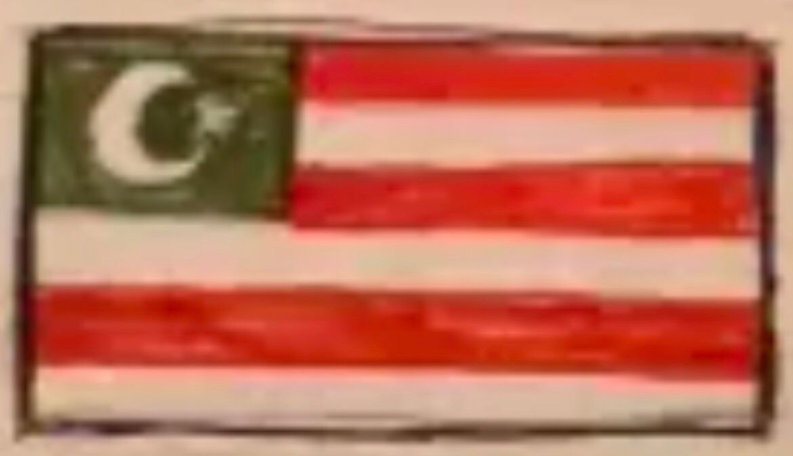
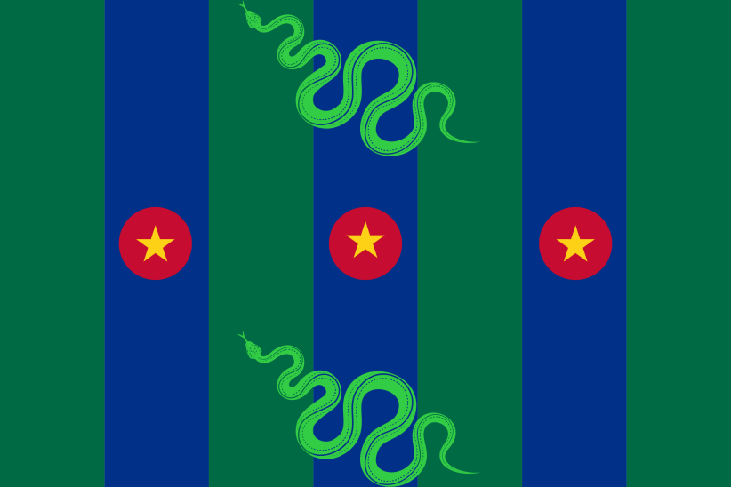
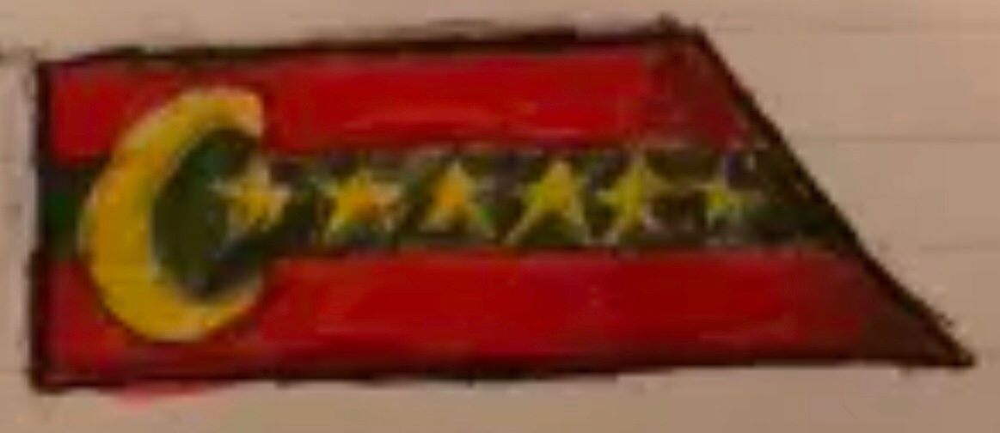
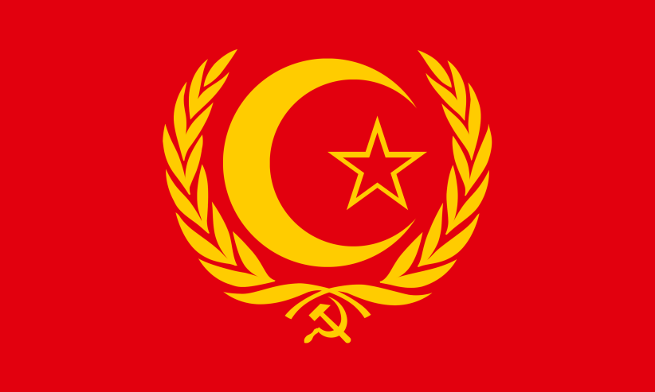
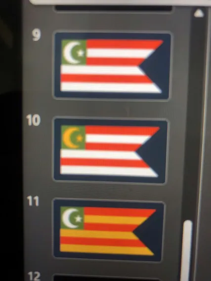
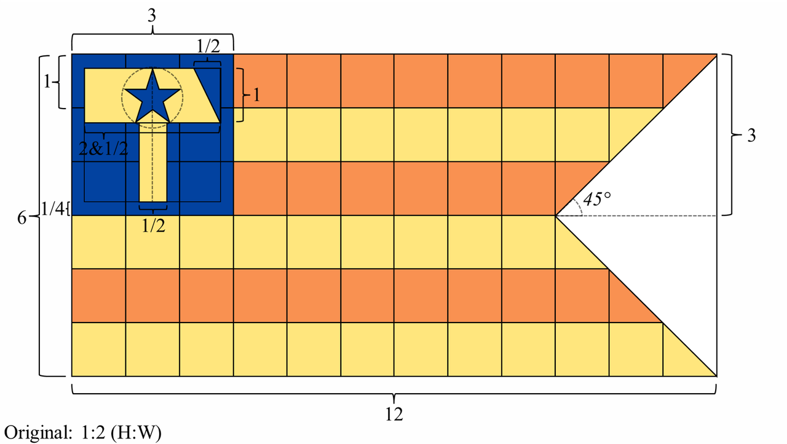

National Flag of Tanomadala

The National Flag of Tanomadala (Indonesian: Bendera Nasional Tanomadala) is a swallowtail banner, which means that it is not a perfect rectangle, but rather has a triangular shape cut out on the fly side of the flag. The flag has an aspect ratio of 1:2, which means for every 1 unit of height, there are 2 units of width (some also say 2:1 if refering to the aspect ratio by width:height).
The flag features six horizontal stripes, alternating orange and gold (or yellow), beginning with orange and ending with yellow. In the top-left corner, or more commonly refered to in vexillology as the canton, is a navy blue box bearing a stylized golden hammer which bears a five-pointed navy blue star.
It was designed by Quentin Pieter, along with help from the former parliament of the DPRR, primarily allies, such as Martland and Ardaria on the 20th of March, 2026. The design was later slightly modified on the 10th of May, but the main design and its elements remained.
History
On the 9th of August, 2025, Quentin Pieter began the first steps towards micronationalism, and created the Democratic People's Republic of Ruandaman. On that same day, the first set flags for the DPRR were created. Up to 7 designs were made by Quentin and were put up for public vote up until the 14th of September, 2025. The referendum even included designs from government members such as small-time YouTuber BelmontReal, and fellow micronationalist Redinian Gomery, president of the Republic of Ohridia.





On the 14th of September, 2025, design number 3 (the one in the middle) was voted on by 57% of the voters to become to first official flag of the DPRR.

The first national flag of the Democratic People's Republic of Ruandaman is a swallowtail, featuring 5 red and white stripes, with a green canton bearing a white Islamic crescent moon and five-pointed star inbetween its points. The flag reigned over the nation from the 14th of September until the 9th of November, 2025. As one might notice, the original design (design 3) had 6 stripes, but was changed to have 5 stripes when making it official. This was done because when vectorizing the design, Quentin forgot that and made it have 5 stripes instead.
The 5 stripes symbolized the 5 pillars of Islam, which are Shahada (declaration of faith), Shalat (daily prayer), Zakat (charity), Sawm (fasting during Ramadhan), and Hajj (pilgrimage to the Mecca). The green of the canton represented Islam in general, as green is a color closley associated with Islam, as it is considered the color of paradise and is commonly used in Islamic flags, such as the flag of Saudi Arabia. Shockingly, the crescent moon and star represents Islam as well. As one might notice, this is a very Islamic influenced flag, even though Ruandaman was never officialy an Islamic state. The red and white stripes are supposed to resemble the reconstructed flag of the Majapahit empire. This design element was chosen because the Majapahit empire was the largest major empire that occupied Java, and Quentin thought it would be neat to represent that on the national flag.
Later on the 8th of November, 2025, Quentin went out to get the national flag custom made to later be hung outside the residence where Ruandaman stood. A local business named Nazhifa Printing located in Tangerang, Banten was commissioned to present a physical copy of the Ruandami national flag. However, due to a miscommunication, the flag ended up shorter than the actual flag at the time. A poll on the official Discord server and a private Whatsapp channel was started, asking whether it should be made into the new official national flag or a government-only-use state flag. The very next day, on the 9th of November, the poll on the Discord server closed with 50% wanting it to become the new national flag.


The second national flag of the DPRR is very similar to the first flag, with the exception of it being in a 2:3 aspect ratio. Aside from that, it retains all the same symbolism and main design elements. This flag is the only Ruandami flag to have a physical copy, however the printed copy has now since been retired and repurposed to create the former presidential standard of Ruandaman which was later repurposed to become the city flag of the current Tanomadalan capital of Ruandaman.
{kind=link}

On the 4th of February, 2026, President Quentin Pieter brought up the idea of changing the national flag... Again. Three designs by him and participating members of parliament were made. Polls were set up on the Discord server and a private WhatsApp channel, and some were just asked directly for their opinion on what they think the new flag should've been. On the 13th of February, the Discord poll ended with a 33% tie between option two (10), option three (11), and the option to not change the flag at all.
On the 14th of February, after re-tallying all the votes, including those from the WhatsApp channel and personal opinions, it was decided that option one (9) would become the new national flag. However when the final vote was counted, it did not become the national flag yet. After working it out with the parliament, on February 20th, it was finalized that design one (9) would become official once the physical copy existed. But later on, on the 1st of March, 2026, the flag was officialy changed, despite the fact that a physical copy doesn't exist.

The third and final flag of the DPRR is very similar to the first version, with modifications to the canton, size of the crescent moon and star, and addition of an extra stripe. The design calls back to the original concept art for the first flag and the first coat of arms by adding that one extra stripe. This version of the flag remained the national flag of the nation since the 1st of March, 2026, until the nation's dissolution on the 19th of April of the same year.
The six stripes represent an element which was featured on the coat of arms for a long while, called the "Elements of a Good Person." They are as follows,
- Disipline
- Charity
- Manners
- Kindness
- Forgiveness
- Having a firm and solemn belief in God
These beliefs are no longer shared with the current socialist government, however the six stripes still remain on the Tanomadalan national flag for "traditions" or something. The last belief, "Having a firm and solemn belief in God" was especially covered up, and said to be retired so as to show the nation's acceptance of non-religious people.


Starting on the 20th of March, 2026, the national flag of the Tanomadalan state began to be designed. The first design idea featured was a modified version of design idea three (11) with a sickle and star, to more closley resemble the flag of Ruandaman. The design was presented to the Ruandami parliament along with other designs as seen on the picture above. The first draft of the national flag was designed on a notebook during a trip to Banjarbaru, South Kalimantan during Lebaran.
The design featuring the navy blue canton was a suggestion by the Emperor of Martland. The first digital version of the flag was made on the same day using a drawing app on Quentin's phone, however this specific version was never made fully official and stayed only as a temporary flag.

The first official flag of Tanomadala is slightly different compared to the temporary version used prior. It is unclear on when it was designed or made official, however it is generally considered to be around after the nation's independence on the 19th of April, 2026. The flag features a thicker hammer and larger star compared to the prior version.

Right after the Tanomadalan succession of the Ruandami state, the presidential standard, which had been flying outside the window of Tanomadalan land, was taken down and shortly afterwards replaced with a temporary pure red banner to symbolize the nation's conversion towards democratic socialism. This flag was never made an official flag, however is still notable enough to the nation's history to be listed here. There have been attempts to turn the red banner into some sort of national or regional flag or some national symbol, but all attempts failed and the flag was discared of and has been kept in storage since.
On the 10th of May, 2026, when creating the official construction sheet of the Tanomadalan flag, minor changed were made to the design, specifically in the canton, where the handle of the hammer was made thinner, and the hammer head made thicker. Fun fact, but when the minor change to the flag was annouced, it was annouced as a "flag redesign" and was jokingly compared to the 1999 redesign of the flag of Japan.
.webp)


On the 16th of May, 2026, Tanomadala reached out again to Nazhifa Printing, commissioning a new physical copy of the Tanomadalan flag. The flag later arrived on the next day, the 17th, and shortly after was hung on a pole inside the capital near the windows. Way later on, on the 9th of June, 2026, the flag was moved from the pole. The flag is now hung up by two strings tied to poorly hammered nails on a wall.
Specifications

The national flag has an aspect ratio of 1:2 (or 2:1 if you write it as width:height), which means for every 1 unit of height, there must be 2 units of length. However to properly recreate the flag, the ratio must be scaled up 6 times (6:12). The unit of measurement used is the height of one stripe, which will be now refered to as 1 unit.
The stripes are the most straight forward and easy design elements. The height of one stripe is 1 unit. The very top stripe has a length of 8 ½ units, the second from the top has a length of 7 ½ units, and the third has a length of 6 ½ units. The fourth from the top has a length of 9 ½, the fifth has 10 ½, and the sixth has 11 ½ units. Note that these halves come from the fact that the last boxes are cut off by the swallowtail edge.
The canton is made of a 3x3 unit box in the top-left corner of the flag, also known as the canton. Inside the canton features the golden hammer and navy star, arguably the most important symbol on the flag. The hammer's head is 1 unit tall and 2 ½ units wide. On the top-right corner of the hammer head lies a right-angled triangle with its point facing down and the hypotenuse facing outwards and leaning towards the bottom-right corner. The triangle is 1 unit tall and exactly ½ units wide. The handle is ½ units wide and features no actual specification for its height. The only specifications for it aside from the width are that it must stay ¼ units away from the edge of the box, and that it must be perfectly centered with the hammer head, which should also be ¼ units away from the edge. The star also doesn't have many specifications. It only specifies that the star must be a traditional five-pointed star which is 1 unit tall that is centered with the hammer head and placed directly inside it.
The swallowtail edge lies on the fly side of the banner. It streches across the side of the flag, it is 6 units tall and 3 units wide. The swallowtail must be that if the flag were split down the middle, the swallowtail would form a right triangle, which would have the reference angle be exactly 45°.
Hey there, you! Are you having trouble reading this article? Do you prefer using visuals to learn? Or do you just hate reading stuff in general? Well do we have great news for you! The official Tanomadalan YouTube channel made an entire video dedicated to the national flag! Watch it down below here!
We thank you dearly for taking your time to learn about us! :)